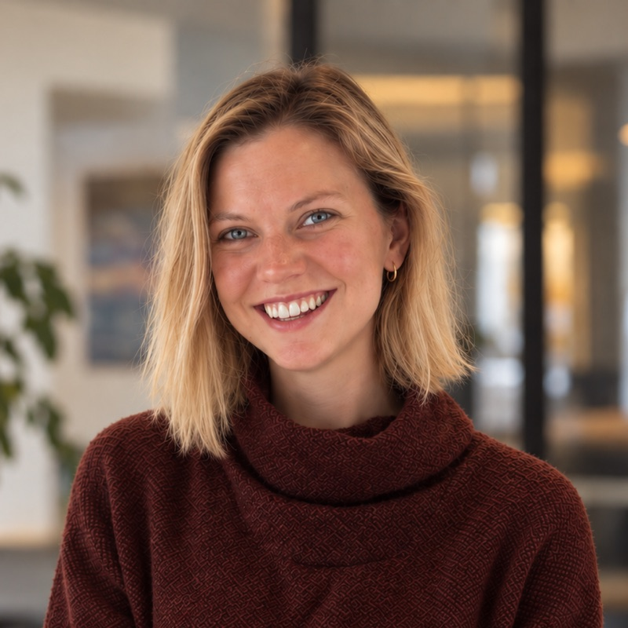
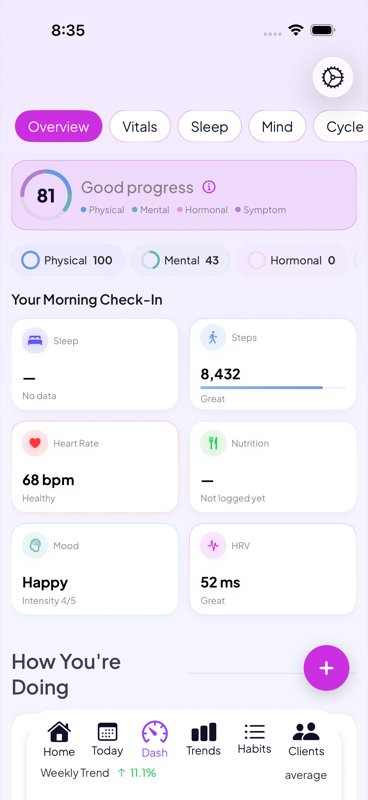
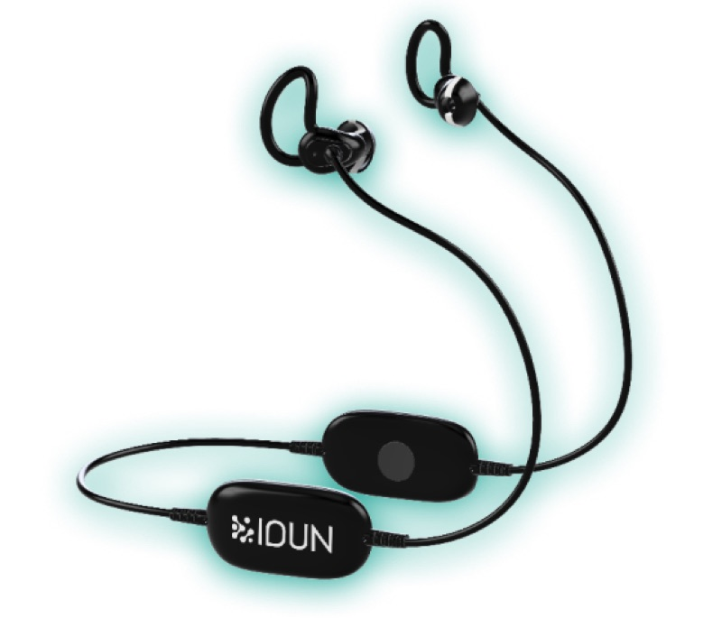
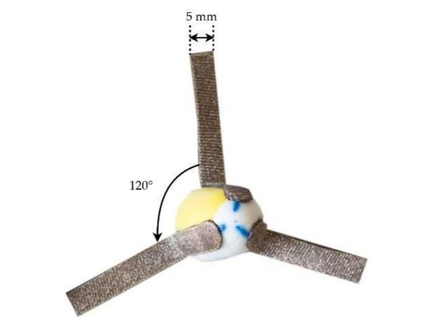
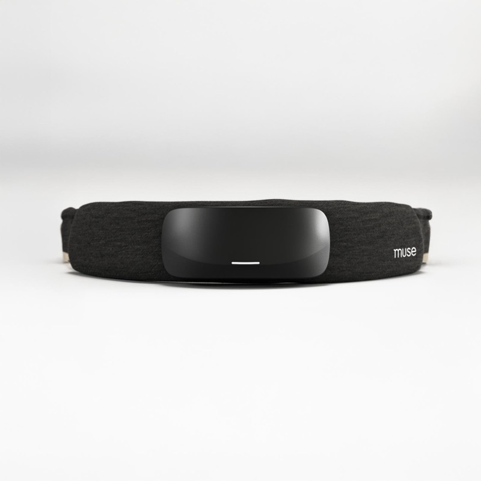

Building Cybiosis Intuition
Jul 24 2024
Cybiosis 2: Essential Elements

How can we best use technology as a tool to improve individual human lives and our society at large? How can we benefit the most from the AI revolution? As technology becomes more embedded in our lives, arguably an essential component of the modern human experience, how can we make sure that this benefits us? How can we mediate our relationship with technology so that it's as good as it can be? How can we focus our development efforts to make sure we're producing more good than harm? As technology becomes even more central to our lives, our systems, our institutions, how can we make sure that it's positively benefitting all people? How can we prevent and counteract the inevitable biases in a tech-obsessed era?
Much of my time is spent consumed by these questions.
I'm building Veya full time, between San Francisco and Zurich. Open to conversations about neurotech, wearables and women's health data.

2025–present
Founder. iOS women's health app; cycle, pregnancy, mood, habits and wearable data in one model of the person. Links: App Store, go-go-gaia.com.

2022–2024
Product owner, Guardian in-ear EEG headphones; CDL.
image: IDUN Technologies
2022
MSc clinical neuroscience; deep-learning dementia diagnostics. I studied clinical neuroscience at UCL's Queen Square (MSc, 2022, distinction). My master's thesis used deep learning on MRI to improve brain-age prediction for early detection of frontotemporal dementia.
photo: Montano336, Wikimedia Commons, CC BY-SA 3.0

2022
One paper: "Correlation of In-Ear EEG with Forehead EEG", Sensors, 2022.
image: Figure 1 of the paper, CC BY 4.0
2020
BASc biomechanical engineering. I studied biomechanical engineering at Queen's University (BASc, 2020, first class honours). My undergraduate thesis modelled brain oxygenation with fNIRS.

2019
Prototyped the Muse S sleepband.
image: Interaxon
2018–2020
Built a neuro-data aggregator for researchers; led ~50 people.


May 15 2024
New language tools will drastically improve communication within and around neurotech.


Books and articles that have shaped how I think. If you've read one, let's talk about it.
A novel about a near future built on genetic engineering and corporate science, told through the memories of a man who calls himself Snowman.
A trilogy about the survivors of a nuclear war and the alien species that finds them, and what each side gets from trading genes.
A novel about a world where some children are genetically engineered to need no sleep, and what that does to the people around them.
The first book of the Terra Ignota series, set in a 25th-century world where people belong to chosen nations instead of geographic ones. It is narrated by a convict who writes in the style of an 18th-century memoirist.
A hard science fiction novel about a crew sent to investigate a signal from beyond the solar system, and about what it means to perceive and to be aware.
A 1989 science fiction novel in which seven pilgrims travelling to the Time Tombs each tell the story that brought them there, in the shape of The Canterbury Tales.
A 1965 science fiction novel about a noble family sent to govern the desert planet Arrakis, the only source of the spice melange.
The first book of The Expanse series. A ship's officer and a detective, in a solar system divided between Earth, Mars and the Belt, follow two separate cases that turn out to be connected.
The first novel of a series about a mathematician who predicts the fall of a galactic empire and sets up a project to shorten the dark age that follows.
A 2020 novel about a United Nations agency set up to represent future generations, told through its work on climate change over several decades.
A 1932 novel set in a future society organised around engineered citizens, mass-produced goods and pleasure, and a visitor who does not fit in.
A 1949 novel about a man who works for the Ministry of Truth in a state that watches and controls every part of daily life, including language.
A 1953 novel about a fireman whose job is to burn books, in a society that has stopped reading them.
A history of how scientists have tried to understand the brain, from ancient ideas to current neuroscience, organised around the metaphors each era used for it.
A 2019 book on how data collected mostly about men shapes the design of products, policy and medicine.
A 2018 book on the new science of psychedelics: their history, the research into depression and addiction, and what they suggest about how the mind works.
A 2021 memoir by the forest ecologist who showed that trees share resources and signals through fungal networks underground.
A 2017 long-read on how the brain works, the history of brain-machine interfaces, and where Neuralink wants to take them. Read it on Wait But Why.
We really don't understand much about the brain. Its complexity, combined with how difficult it has historically been to record good data from it, has resulted in slow-going research and an extremely high-level understanding of things. Harvard neuroscientist Jeff Lichtman asks his students: if everything we need to know about the brain is a mile, how far have we walked? His answer is about three inches. As a result, many neuro-related diagnoses are a death sentence with limited treatment options, only a long, slow, horrible few years ahead of you. So, we need to learn more. We need a better understanding of what's happening so we can get earlier diagnostics, more effective treatments, and put off or ideally overcome these bad years.
I think the ideal approach here is more data. Good data, from different sources, over time, is going to be key for us spotting patterns and learning relationships that will help us map cause and effect, which we can leverage for earlier diagnostics, better treatment, and eventually precise, personalised, preventative care.
So how do we get this data? We need to build tech that offers value and is useful to people in their everyday lives. This will help the tech scale, become more ubiquitous, become cheaper, smaller, better available, better integrated. If we can make data collection and scaling across populations cheap and easy, then we will be able to collect this vital dataset across populations.
Okay, so say we are capable of capturing the data. Now what? We can leverage the developments in AI to more easily assess and analyse all this data, translating it into these earlier diagnostics and more effective treatments.
It's all about adding value today with scalable technology, while using any data (safely) to further our understanding of neurology, and help people at a deeper level.
Cybiosis is a word I coined in 2024 for the degree of integration between humans and technology. Derived from symbiosis, it considers the interactions between biological humans and their technology. It is a spectrum: high cybiosis means a technology that is affordable, seamlessly integrated, easy to use ("set and forget"), and adds significant value to daily life. A pacemaker is high cybiosis; a continuous glucose monitor with an insulin pump, or a Garmin watch, is in the middle; an MRI is low.
To define a technology's cybiosis I look at four things: applicability (how useful is the data), data quality (precision, consistency, reliability), adoptability (ease of use, comfort, cost), and scalability (reach, accessibility, integration). The full argument is in the two essays above.
I had debilitating migraines for about a decade. Tracking my cycle alongside sleep and barometric pressure, with a system I built for myself, is what finally tied them to my cycle. That system became Veya. I haven't had a migraine I couldn't see coming since.
Most consumer health devices, and much of the research behind them, were built around a body that doesn't cycle. A hormonal cycle is a slow, personal rhythm that only shows up when you line up sleep, mood, symptoms and wearable data over months, which makes it the best test case I know for the thing I actually care about: building a health system around each person. Women are where I start, not where it ends.
I still use Veya every day. The company behind it is Holland Neurotech Inc., which is me and a small team. We never sell your data, and the privacy policy says exactly what we collect and why. If you have a question about your data, email me at abby@myveya.com.
Email abby@myveya.com · Substack · X @holland_neuro · LinkedIn
Abby Holland (Abigail Holland) is a Canadian biomechanical engineer and neurotech founder. She founded Holland Neurotech Inc. and builds Veya, a women's health app. She has worked on EEG headphones at IDUN Technologies, the Muse S sleepband at Muse, and holds an MSc in clinical neuroscience from UCL.
Cybiosis is a term Abby Holland coined in 2024 for the degree of integration between humans and technology, derived from symbiosis. It is a spectrum from low (an MRI) to high (a pacemaker), judged on applicability, data quality, adoptability and scalability.
Veya is an iOS women's health app made by Holland Neurotech Inc. It tracks cycles, pregnancy, mood, habits and wearable data and finds the patterns between them. Get it on the App Store.
Mostly San Francisco and Zurich, and also Toronto and London.
Holland Neurotech Inc. is the Canadian company Abby Holland founded; it makes Veya. Its legal pages for the app live at go-go-gaia.com.
Veya is made by Holland Neurotech Inc., founded by Abby Holland, who uses it daily. It never sells user data; the privacy policy at go-go-gaia.com lists what it collects and why.
Email abby@myveya.com, or on X at @holland_neuro.